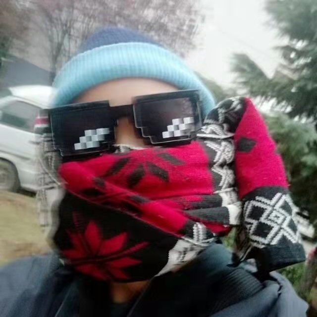
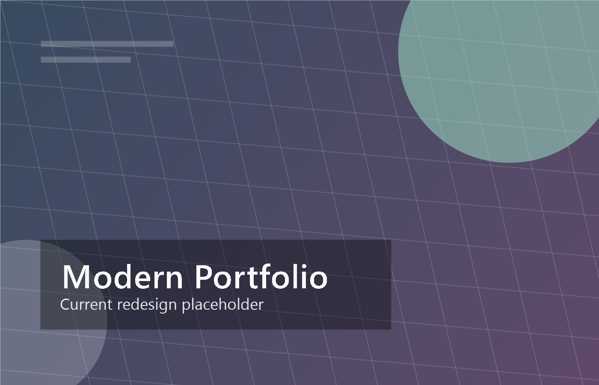
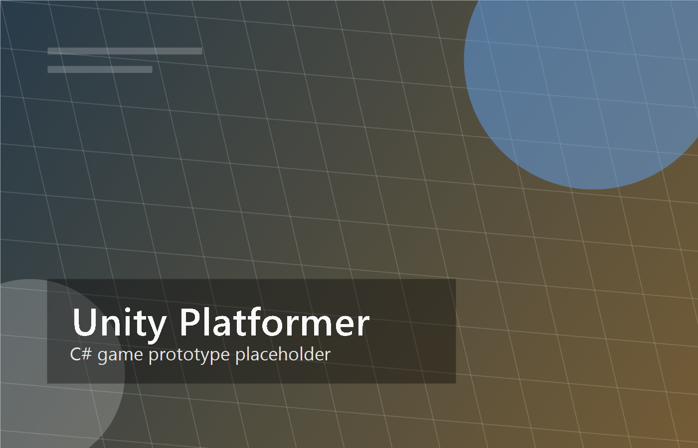
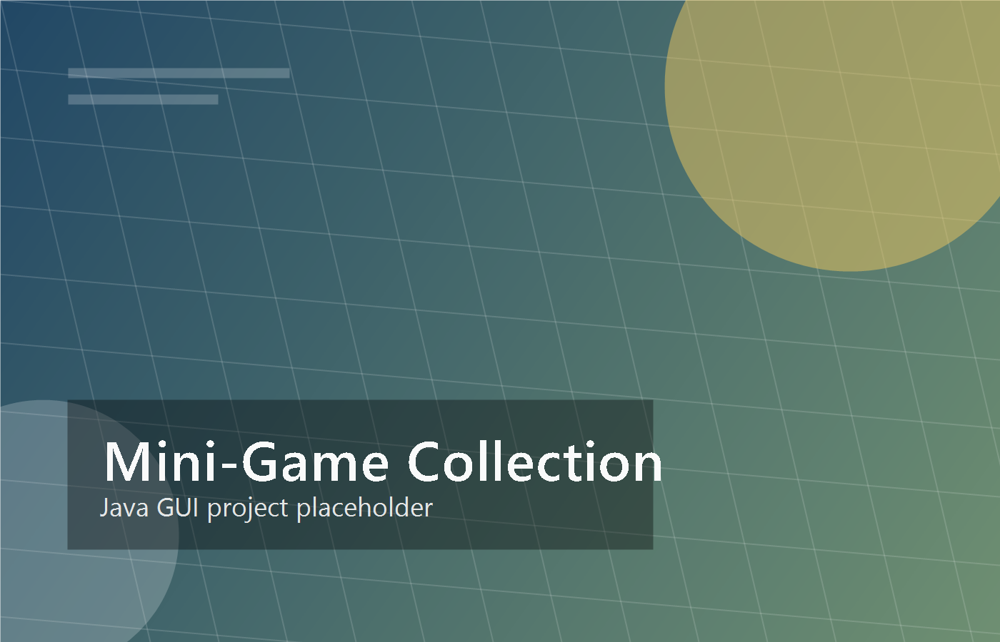

01Visual notesphotos
Travel moments, quiet details, and everyday composition practice.
The interests that shape how I notice rhythm, motion, composition, and play.

01Visual notesTravel moments, quiet details, and everyday composition practice.

02In rotationRhythm, focus sessions, and sound collected as a design moodboard.

03Motion studiesShort edits, motion experiments, and visual storytelling references.

04Play systemsMechanics, worlds, and interaction ideas learned through play.